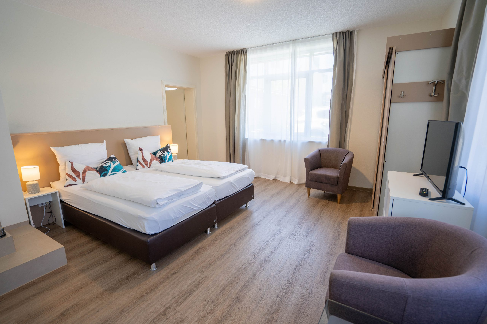
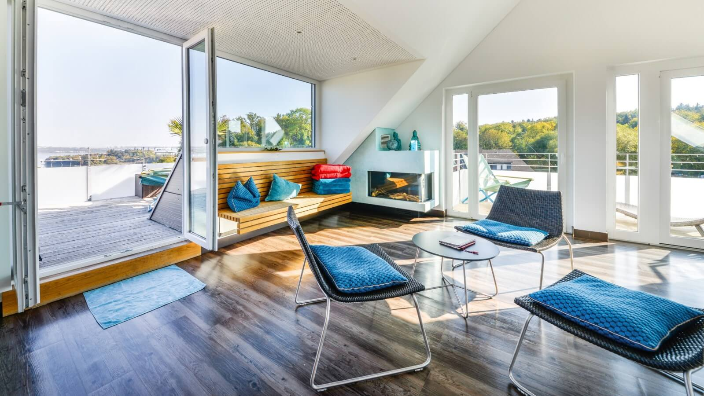
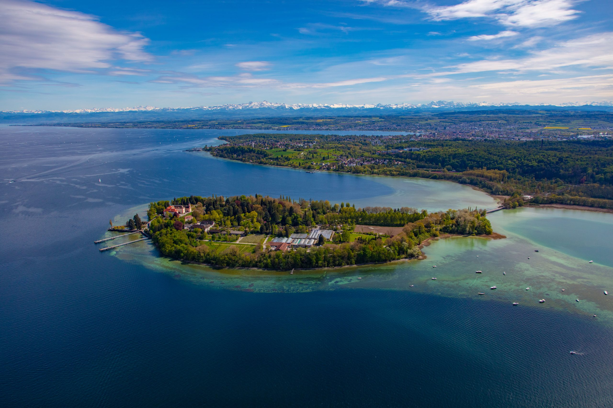
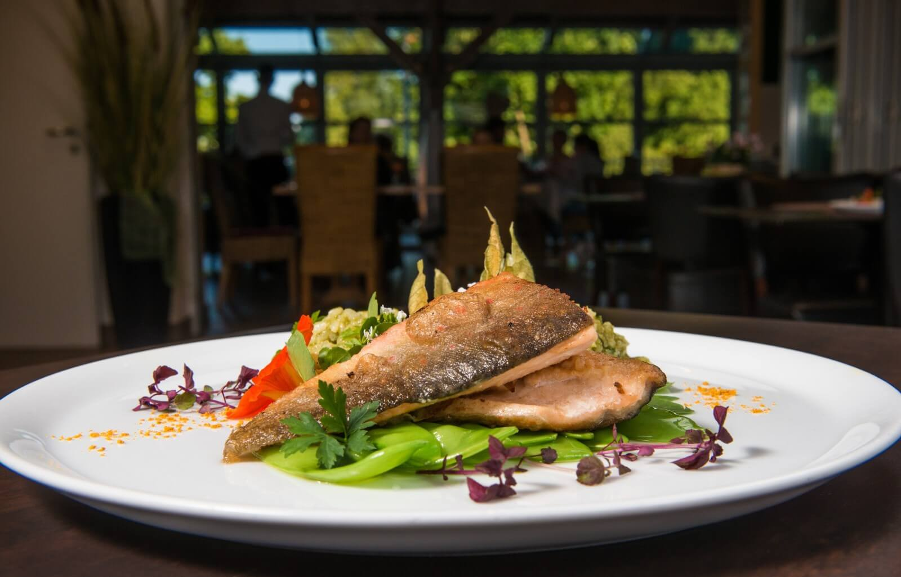

Doppelzimmer Balkon
Im Hauptgebäude, mit Balkon oder Terrasse und allem, was es für entspannte Tage braucht.
ab 99 € pro Nacht
Zimmer ansehen
Konstanz-Litzelstetten · Bodensee
Ein Familienbetrieb mit Herz, ruhig im Grünen und nur wenige schöne Gehminuten von der Insel Mainau entfernt.

Vekö Ladiko · Herzlich willkommen
Mit Blick auf den Überlinger See und doch nah an der historischen Stadt Konstanz begrüßt Sie das Volapük mit freundschaftlich gelassener Atmosphäre.
Der Name geht auf die Plansprache „Volapük“ zurück, die Johann Martin Schleyer um 1879 im nahen Pfarrhaus von Litzelstetten entwickelte. „Vola“ heißt Welt, „Pük“ heißt Sprache – ein Stück Ortsgeschichte, das bis heute zu diesem Haus gehört.
Zimmer & Preise
Von kompakt und unkompliziert bis zum Familienzimmer mit zwei Räumen. Sauna und kostenfreies Parken gehören für Hausgäste dazu.
Im Hauptgebäude, mit Balkon oder Terrasse und allem, was es für entspannte Tage braucht.

Mit Balkon, mehr Platz und Blick in Richtung See und Insel Mainau.

Zwei Räume im Nebengebäude und Platz für die gemeinsame Bodensee-Auszeit.



Für Kulturentdecker, Radfahrer und Entspannungsprofis
Ein Hotel mit Herz. Zwischen Mainau, Seeufer und Konstanzer Altstadt.
Business-Trip, romantische Auszeit oder Familienurlaub – Sie entscheiden, wie Ihr Bodensee-Tag aussieht.
Aktuelle Auszeiten
Saisonale Arrangements verbinden Übernachtung, Genuss, Mainau und Wellness – direkt vom Hotel zusammengestellt.

3 Übernachtungen, Frühstück, Willkommensdrink, 3-Gang-Menü und Eintritt zur Blumeninsel.
Details ansehenZwei Nächte zu zweit mit Power-Relaxing, Abendmenü, Sauna und Late Check-out.
Details ansehen
Restaurant & Café Litzel's
Gutbürgerliche Küche in modernem, frischem Stil – im gemütlichen Restaurant, im sonnigen Wintergarten oder auf der großen Terrasse.
Frühstück gibt es täglich von 07:00 bis 10:00 Uhr. Gerichte können auch zum Mitnehmen bestellt werden.
Bodensee erleben
Das Hotel liegt ruhig in Litzelstetten und ist ein idealer Ausgangspunkt für Insel, Stadt, Radweg und Schiff.

Die Blumeninsel erreichen Sie vom Hotel aus in wenigen wunderschönen Gehminuten.
Mehr erfahren
Hafen, Konzil, Museen, Theater und Gassen voller Cafés sind nur eine kurze Fahrt entfernt.
Mehr erfahren
Tagestouren starten direkt vor der Tür; Fahrräder stehen geschützt in der Tiefgarage.
Mehr erfahren